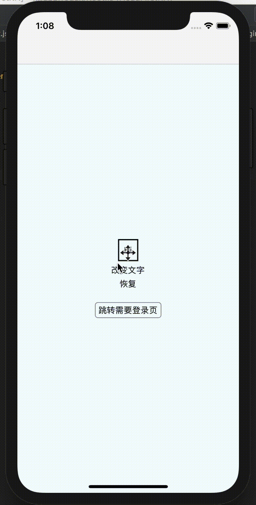

React Native - 从 Redux 进阶谈起

继上次写完 Redux 之后，留下了很多坑，其实这篇也不算是进阶，毕竟只是一些库的使用以及一些小技巧而已，权当是上一篇的填坑了吧。
01 Middleware & Thunk
What’s Middlewares?
当我们发送 action 的时候，正常情况下是从 action -> reducer，引入中间件后变为 action -> middlewares -> reducer。为什么要这么做？因为很多时候我们想在 action 传送到 reducer 之前，对数据流进行改变或者进行一些别的什么操作，比如对 action 添加日志，如果一个个去更改 Action Creator 未免太过麻烦，而使用 Middleware 的话就简单很多，可以帮我们省去很多重复代码。最重要的一点，我们可以通过使用 Thunk Middleware 来实现异步 action。
What’s a thunk?
Thunk 就是包装了函数表达式的用于延缓求值的方法。通过下面这个例子可以很好的理解：
1 | |
为什么叫 thunk？它是『think』过去式的 幽默式表达（意思是已经想好怎么做了，但是就是还没做⸜(ّᶿധّᶿ)⸝）。
Redux Thunk
当我们使用了 middleware 的时候，发出的 action 不会直接被 reducer 处理掉，而是先被 middleware 截获，并且我们可以在 middleware 中发起 异步请求。Redux Thunk 就是这样的中间件，允许我们在 Redux 中发起异步请求。
applyMiddleware
在 createStore() 的时候，我们可以指定 enhancer 参数，最常见的就是 applyMiddleware()，为了在 Redux 中开启对 Redux Thunk 的支持，就需要使用该方法：
1 | |
Return a function
使用了 Redux Thunk 后，我们可以在 Action Creators 中返回一个方法而不是 action，因此我们可以延迟 action 的 dispatch 或者在只有满足条件的时候才 dispatch。内部返回的方法接收的参数分别是 store 的 dispatch 和 getState 方法。举个发起请求获取数据的例子：
1 | |
上面这个就是一个 thunk function，其使用方式与普通的 Action Creators 一样，可以直接作为第二个参数传入 connect() 方法中：
1 | |
当然 Redux Thunk 也不是唯一的发送异步 Action 的方式，比如 redux-saga 以及 redux-promise 都可以达到相同的目的，Redux 文档上还介绍了一些别的方式：
Thunk middleware isn’t the only way to orchestrate asynchronous actions in Redux:
- You can use redux-promise or redux-promise-middleware to dispatch Promises instead of functions.
- You can use redux-observable to dispatch Observables.
- You can use the redux-saga middleware to build more complex asynchronous actions.
- You can use the redux-pack middleware to dispatch promise-based asynchronous actions.
- You can even write a custom middleware to describe calls to your API, like the real world example does.
It is up to you to try a few options, choose a convention you like, and follow it, whether with, or without the middleware.
02 Higher-Order Components
What’s HOC?
HOC 即 Higher-Order Components 高阶组件的简称，从形式上来看，其实就是接收函数作为参数的函数。
HOC 是 React 中的一种模式，通过 HOC 我们可以方便地在多个组件中注入一些通用的功能，这样就可以避免重复的代码逻辑。一个 HOC 函数接收一个组件作为参数，并且返回一个新的组件，通过 HOC 函数我们可以为组件添加额外的功能或者数据。
在 RN 中，一种常见的使用方式是通过 HOC 函数作为页面跳转的依据。比如检验有无登录，如果页面需要登录后才能查看，那么用户在未登录的情况下会先跳转登录页。
How to use it?
HOC 的使用方法很简单，形式如下：
1 | |
这里的匿名函数接收的参数是 WrappedComponent，即我们需要包装的组件，返回的是我们对包装的组件进行处理之后的新组件。其使用方式如下：
1 | |
除此之外，我们也可以结合 React Redux 使用：
1 | |
其实这里的 connect() 方法就是一个 HOC 的例子，通过连接组件和保存在 Store 中的全局 state，同时在组件中可以通过 props 的形式来访问这些全局 state。
03 Combine with react-native-router-flux
介绍了 Thunk Middleware 和 HOC，接下来我想用一个例子展示如何在项目中使用他们。这个例子使用到了 React Native Router，这是一个非常好用的页面路由、页面导航以及页面间传递数据的 RN 框架。这里我只用到了其中很小一部分的功能，更多的用法请移步 API 文档。
照惯例，先看下实现的效果：
可以看到，我们在原来的基础上添加了两个新的页面，一个是登录后的页面，一个是登录页，连接它们的是一个 HOC 函数：
1 | |
在 HOC 中，我们根据 authToken 的状态来决定是直接跳转还是先跳转到登录页。这个例子很好的说明了 HOC 函数的优势，所有需要登录的地方都只要调用这个函数就可以了。这里的 authToken 是从 store 中获取的，因此我们还得写一个模拟登录的 Action Creator 来进行登录获取 token，同时展示下如何使用 Redux Thunk 发起异步请求：
1 | |
另外，还有对应的 reducer，注意，combineReducers() 接收的参数为对象：
1 | |
最后，除了两个新页面之外，我们还需要定义一个 router 页，也就是使用 React Native Router 来管理各个页面：
1 | |
然后在 App 的入口处使用 AppRouter 替换原来的 Main:
1 | |
OK，核心代码就是这样了，完整代码：aJIEw/Redux
04 Sum Up
这篇写的比较杂，一开始只是想写下 Redux 中的 middleware，后来看了这篇 Redux-Thunk vs. Redux-Saga，发现对于大多数场景下，的确使用 Redux-Thunk 就足够了。而 HOC 也是临时想到要写一写的，毕竟也算是 React 中一种常见的模式了吧。最后这个结合 react-native-router 写的例子也比较简单，主要用来说明 Redux-Thunk 发异步请求以及 HOC 的大致用法。
好了，写完这篇有种『我已经掌握 React Native 开发了』的错觉，但其是内心还是很慌的，因为知道要掌握的东西还有太多。不过一口吃不成个胖子，只能静下心来一步一脚印慢慢往前走了。每天进步一点点，坚持下去，收获就是巨大的。嗯，加油~(•̀ᴗ•́)و ̑̑
参考文章：